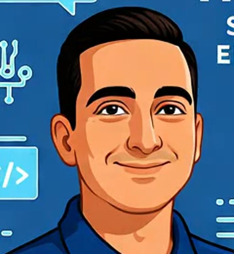

Atención personalizadaAlcance y costos clarosSoftware libre cuando conviene
01 / SOLUCIONES PARA TI
Menos obstáculos. Más posibilidades.
Elige tu objetivo. Yo me encargo de la parte técnica.
01
Web y ventas
Páginas web, tiendas en línea y POS que simplifican tu negocio.
WebE-commercePOS
Qué incluye +
Desarrollo web, comercio electrónico y puntos de venta con software libre, sin cuotas mensuales o anuales por licencia.
Facturación electrónica para RIMPE y pequeños negocios, con suscripción mensual o anual según requisitos del SRI.
Dominio, alojamiento, integraciones y soporte según la propuesta.
02
Compras y asesoría
Elige equipos y tecnología que sí necesitas, sin gastar de más.
EquiposNubeAutomatización
Qué incluye +
Asesoría de compra para hogar, oficina y empresa.
Consultoría TI, nube y revisión de costos.
Automatización, usos de IA con protección de datos y continuidad del negocio.
03
Datos y reportes
Convierte ventas, inventario y resultados en decisiones claras.
Power BISQL Server
Qué incluye +
Análisis de datos, paneles, gráficos y reportes empresariales en Power BI.
Creación y optimización de consultas SQL Server.
Optimización de cargas de datos y rendimiento.
04
Servidores y redes
Una infraestructura organizada para que tu equipo trabaje mejor.
WindowsUbuntuVirtualización
Qué incluye +
Instalación y mantenimiento de software, Windows Server y Ubuntu Server.
Servidores y máquinas virtuales.
Redes y balanceadores de carga (load balancers).
05
Control y seguridad
Ordena accesos, administra dispositivos y protege tu información.
Directorio activoEndpoints
Qué incluye +
Active Directory para centralizar usuarios, permisos y computadoras compatibles.
Políticas de grupo (GPO) y protección de endpoints.
Gestión de celulares y tablets mediante MDM compatible.
Copias de seguridad y pruebas de recuperación.
06
Monitoreo TI
Conoce el estado de tus sistemas y recibe alertas de fallas.
InfraestructuraRedes
Qué incluye +
Monitoreo de infraestructura, servidores y redes.
Zabbix, Pandora FMS, FortiMonitor y FortiSIEM.
Paneles de estado, alertas y revisión de eventos.
Las licencias comerciales, infraestructura y soporte se detallan por separado cuando sean necesarios.
DIRECTORIO ACTIVO + GESTIÓN DE DISPOSITIVOS
Todo bajo control.
Centraliza usuarios, permisos y computadoras con Active Directory. Integra celulares y tablets con una solución de gestión móvil (MDM) compatible.
Accesos por perfilPolíticas por equipoProtección endpoint
Gestión centralizada
Equipos
Usuarios
Celulares
Tablets
02 / A TU MEDIDA
Crece a tu ritmo.
La solución cambia contigo. Tu propuesta también.
EMPRENDIMIENTOS
Da el primer paso.
Una web, una tienda o un POS para empezar con lo esencial.
PEQUEÑOS NEGOCIOS
Ordena tu operación.
Conecta ventas, inventario y reportes para trabajar con claridad.
EMPRESAS
Conecta tu equipo.
Integra servidores, accesos, dispositivos y monitoreo.
TU PRESUPUESTO ES EL PUNTO DE PARTIDA
Proyectos desde USD 300.
Empecemos con lo que necesitas. El valor final depende del tamaño de tu negocio, el alcance, los usuarios, equipos, integraciones y soporte.

frediian.Ingeniero en informáticaLoja, Ecuador
03 / TRATO DIRECTO
Tecnología con cercanía.
Soy frediian, desarrollador y consultor TI. Te ayudo a elegir, implementar y cuidar la tecnología de tu negocio, con explicaciones claras y sin intermediarios.
01
Te escucho.
Entendemos lo que necesitas.
02
Lo definimos.
Acordamos alcance y presupuesto.
03
Lo resolvemos.
Implementamos y comprobamos.
CERCA DE TU NEGOCIO
Desde Loja. Para todo Ecuador.
Atención personalizada, donde la necesitas.
Loja · Zamora · Yantzaza
Atención directa y personalizada, con cita.
Todo Ecuador
Asesoría y proyectos por agenda o videorreunión.
04 / CONVERSEMOS
Tu siguiente paso.
Cuéntame qué necesitas resolver.
PARA EMPEZAR
Recomendaciones gratuitas
Una orientación inicial para elegir equipos, explorar una idea o definir por dónde empezar.
No incluye diagnóstico profundo ni implementación.CON CITA PREVIA
Consulta técnica
$40 USD · 2 horas
Revisamos tu caso y definimos acciones concretas, por videorreunión o según lo acordado.
Sujeto a disponibilidad. Desarrollo y licencias se cotizan aparte.
SIN LETRA PEQUEÑA
Dudas frecuentes.
¿Hay mensualidades?+
Web, e-commerce y POS con software libre no tienen cuotas por licencia. Alojamiento, dominio y soporte pueden tener costos. La facturación electrónica se ofrece con suscripción mensual o anual.
¿Cómo se define el presupuesto?+
Los proyectos parten de USD 300. El valor final se define según el tamaño de tu negocio, los usuarios, equipos, funciones, integraciones y soporte. Cada proyecto recibe una propuesta a medida.
¿Incluye facturación para RIMPE?+
Puede integrarse según las obligaciones del contribuyente y los requisitos vigentes del SRI. Revisamos firma electrónica y alcance antes de contratar. No reemplaza la asesoría contable.